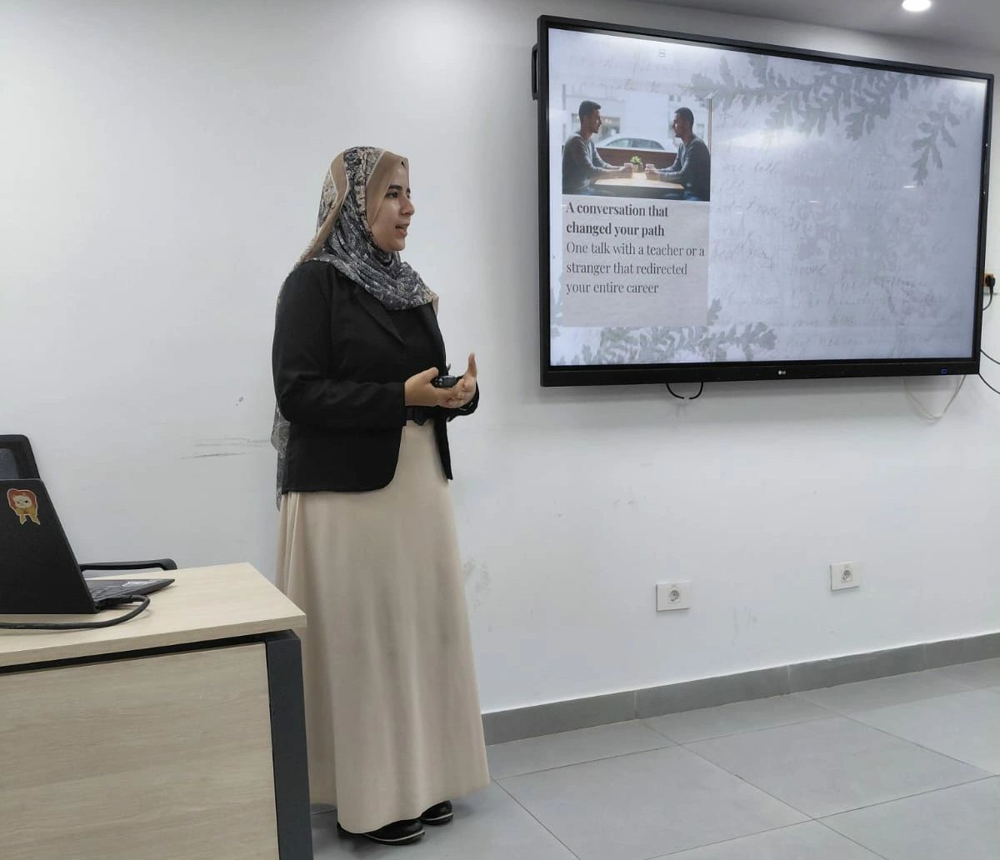
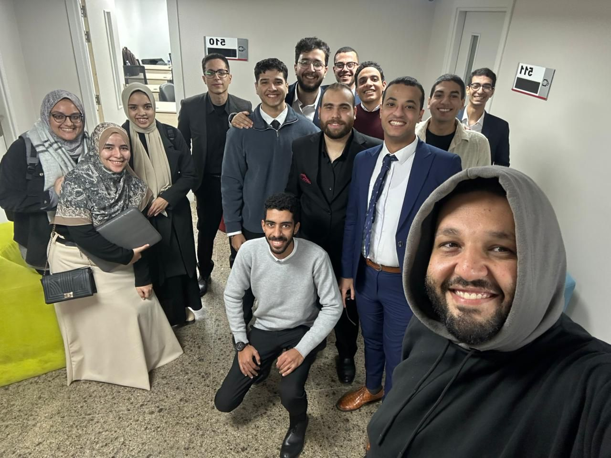

ITI Journey
9-Months of Professional Development & BI infused CRM.
Activities & Sessions


Graduation Project
MediTender Smart Assistant
A .NET Web API solution designed for automated tender document analysis, leveraging advanced vector search capabilities and semantic reasoning.
My Role:
- Engineered the backend infrastructure and API endpoints.
- Integrated Semantic Kernel for intelligent data processing.
- Configured and managed the Qdrant vector database.
- Developed the front-end dashboard UI for data visualization.